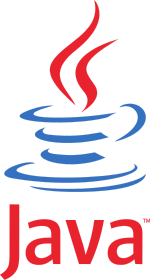

Java
Η Java είναι μια αντικειμενοστρεφής γλώσσα προγραμματισμού που σχεδιάστηκε από την εταιρεία πληροφορικής Sun Microsystems.
Ιστορία
Στις αρχές του 1991, η Sun αναζητούσε το κατάλληλο εργαλείο για να αποτελέσει την πλατφόρμα ανάπτυξης λογισμικού σε μικρο-συσκευές (έξυπνες οικιακές συσκευές έως πολύπλοκα συστήματα παραγωγής γραφικών). Τα εργαλεία της εποχής ήταν γλώσσες όπως η C++ και η C. Μετά από διάφορους πειραματισμούς προέκυψε το συμπέρασμα ότι οι υπάρχουσες γλώσσες δεν μπορούσαν να καλύψουν τις ανάγκες τους. Ο "πατέρας" της Java, James Gosling, που εργαζόταν εκείνη την εποχή για την Sun, έκανε ήδη πειραματισμούς πάνω στη C++ και είχε παρουσιάσει κατά καιρούς κάποιες πειραματικές γλώσσες (C++ ++,που μετέπειτα ονομάστηκε C# ) ως πρότυπα για το νέο εργαλείο που αναζητούσαν στην Sun. Τελικά μετά από λίγο καιρό κατέληξαν με μια πρόταση για το επιτελείο της εταιρίας, η οποία ήταν η γλώσσα Oak. Το όνομά της το πήρε από το ομώνυμο δένδρο (βελανιδιά) το οποίο ο Gosling είχε έξω από το γραφείο του και έβλεπε κάθε μέρα.
H εξαγορά από την Oracle και το μέλλον της Java
Στις 27 Απριλίου 2010 η εταιρία λογισμικού Oracle Corporation ανακοίνωσε ότι μετά από πολύμηνες συζητήσεις ήρθε σε συμφωνία για την εξαγορά της Sun Microsystems και των τεχνολογιών (πνευματικά δικαιώματα/ πατέντες) που η δεύτερη είχε στην κατοχή της ή δημιουργήσει. Η συγκεκριμένη συμφωνία θεωρείται σημαντική για το μέλλον της Java και του γενικότερου οικοσυστήματος τεχνολογιών γύρω από αυτή μιας και ο έμμεσος έλεγχος της τεχνολογίας και η εξέλιξη της περνάει σε άλλα χέρια.
Τα χαρακτηριστικά της Java
Ένα από τα βασικά πλεονεκτήματα της Java έναντι των περισσότερων άλλων γλωσσών είναι η ανεξαρτησία του λειτουργικού συστήματος και πλατφόρμας. Τα προγράμματα που είναι γραμμένα σε Java τρέχουνε ακριβώς το ίδιο σε Windows, Linux, Unix και Macintosh (σύντομα θα τρέχουν και σε Playstation καθώς και σε άλλες κονσόλες παιχνιδιών) χωρίς να χρειαστεί να ξαναγίνει μεταγλώττιση (compiling) ή να αλλάξει ο πηγαίος κώδικας για κάθε διαφορετικό λειτουργικό σύστημα. Για να επιτευχθεί όμως αυτό χρειαζόταν κάποιος τρόπος έτσι ώστε τα προγράμματα γραμμένα σε Java να μπορούν να είναι «κατανοητά» από κάθε υπολογιστή ανεξάρτητα του είδους επεξεργαστή (Intel x86, IBM, Sun SPARC, Motorola) αλλά και λειτουργικού συστήματος (Windows, Unix, Linux, BSD, MacOS). Ο λόγος είναι ότι κάθε κεντρική μονάδα επεξεργασίας κατανοεί διαφορετικό κώδικα μηχανής. Ο συμβολικός κώδικας (assembly) που μεταφράζεται και εκτελείται σε Windows είναι διαφορετικός από αυτόν που μεταφράζεται και εκτελείται σε έναν υπολογιστή Macintosh. Η λύση δόθηκε με την ανάπτυξη της Εικονικής Mηχανής (Virtual Machine ή VM ή ΕΜ στα ελληνικά).